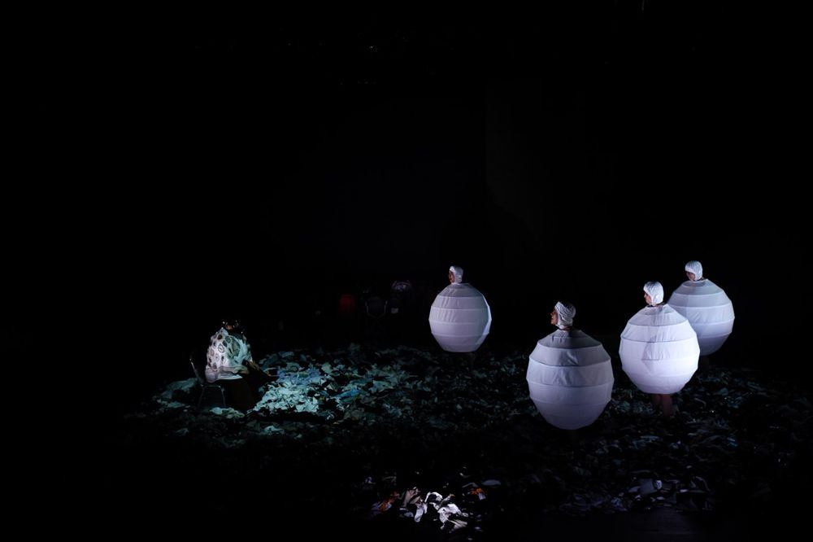

그린피그 > 아카이브 > 나무는 신발가게를 찾아가지 않는다

'신발'로 대표되는 문명의 발달과 인간의 역설을 윤영선의 '나무'에 대비한다. 윤영선의 시적이고 멜랑콜리한 언어 위로 '원숭이 꽃신', '태아잡담', '계약' 같은 에피소드가 짧은 호흡으로 교차한다. 봉제공장 자투리 천으로 쌓은 폐기물 산 위에서 핵과 원전, 멈추지 않는 욕망과 자본, 무너지는 문명을 '태어나고 싶지 않은 태아'의 시선으로 그린다. 윤영선의 7쪽짜리 초고에서 시작해 공동창작과 전성현의 추가·재구성을 거쳤고, 2012년 윤영선 연극제 초연 뒤 10년 만에 다시 올렸다. 그린피그 'e(환경)-삼부작'의 시작.
2012.12.24–30 / 정보소극장 - 윤영선 연극제
2022.3.26–4.3 / 대학로예술극장 소극장
2022.10.6–9 / 대학로예술극장 소극장 - 서울국제공연예술제(SPAF)
2023.10.26 / 광명시민회관 대공연장
2023.11.11–12 / 중국 선전 난산문화센터 - 제27회 베세토 연극제, 우수작품상
2023 제27회 베세토 연극제 우수작품상
원작: 윤영선
글쓰기: 전성현
연출: 윤한솔
조연출: 주은길
음향: 전민배
조명: 최보윤
영상: 윤민철
음악: 옴브레
의상: 온달
오퍼레이터: 박현지
기획·무대감독: 스탭서울
그래픽디자인: 워크룸
출연(2022): 김원태, 박수빈, 박유진, 이동영, 이주형, 이지원, 이승훈, 정대용, 정양아, 정연종, 황미영
지원: 한국문화예술위원회 공연예술중장기창작지원
2022.4.2 관람 후기 (네이버 블로그)
2022.3.30 관람 후기 (네이버 블로그)
2022.3.29 관람 후기 (네이버 블로그)
2022.3.27 관람 후기 (네이버 블로그)
2022.3.16 기사 (민중의소리)
2022 리뷰, 『연극평론』 2022 여름호(105호)
이전: 〈원치않은, 나혜석〉 | 다음: 〈빨갱이. 갱생을 위한 연구(가제)〉
아카이브로 돌아가기 | 아무 작품이나
발행일 2026.11.10